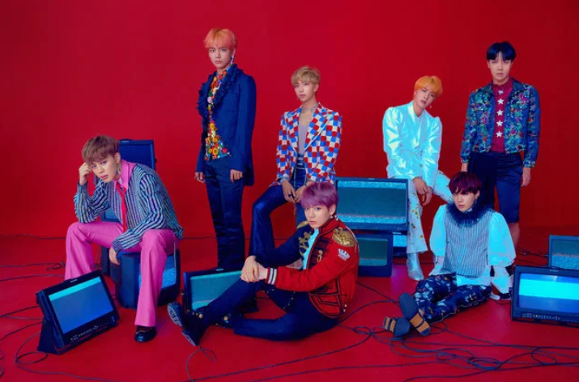
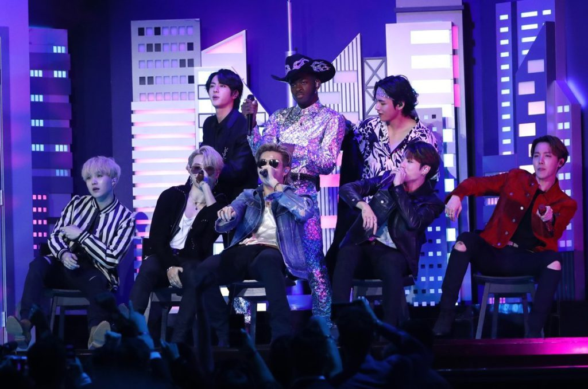
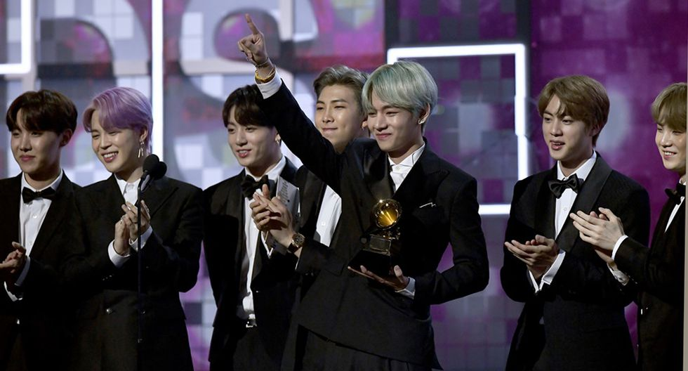
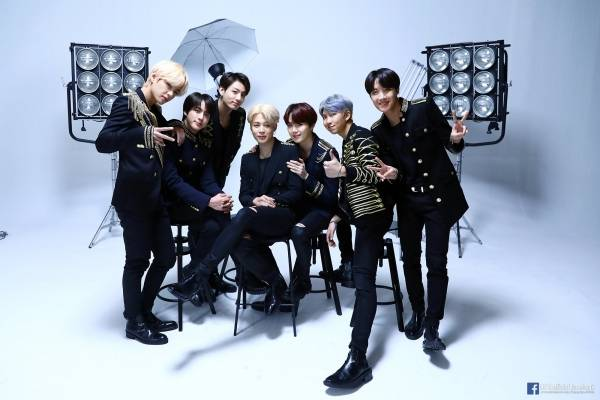
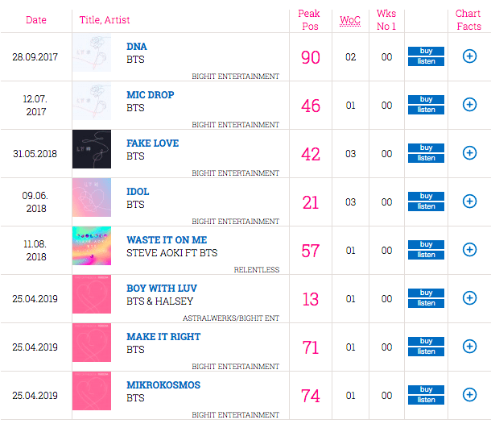

Recibir la certificación de álbum de platino RIAA en los EE. UU.
En enero de 2020, se anunció que Love Yourself: Answer vendió 1 millón de unidades en los EE. UU., Lo que lo certificó oficialmente como platino por la RIAA. 1 unidad es venta de 1 álbum, 10 canciones vendidas de 1 álbum o 1,500 transmisiones de audio o video.
El álbum también fue el primero en un acto coreano en recibir la certificación BPI (plata) en el Reino Unido.

Bts con certificado de RIAA
Actuar en los Grammys
BTS realizó a los 62 ª Premios Grammy con Lil Nas X y una variedad de otros artistas. Si bien no llegaron a tener su propio escenario, aún hicieron historia como el primer acto coreano en presentarse en la prestigiosa entrega de premios. También fueron el primer acto coreano en presentarse en la ceremonia en 2019.

Bts en los Grammys con Lil Nas
Que un álbum reciba una nominación al Grammy
Love Yourself: Tear fue nominado a Mejor Diseño de Empaque (junto con el empaquetado diseñador HuskyFox) a los 61 st premios Grammy , BTS se convirtió en el primer cantante de Corea en recibir el reconocimiento Grammy.

Bts en los Grammys
Alcanza el # 1 en la tabla Billboard 200
En 2018, Love Yourself: Tear se lanzó a como número 1 en la lista de álbumes Billboard 200, convirtiéndose en el primer grupo coreano en lograr la hazaña.
Luego lo superaron nuevamente con Love Yourself: Answer y Map of the Soul: Persona . BTS también fue el primer grupo coreano en alcanzar el número 1 en el Billboard Artist 100 y grabar varios álbumes en el Billboard 200 en un año.

BTS los Billboard
Supera los 5 mil millones de transmisiones de Spotify
Después del lanzamiento de Map of the Soul: Persona , BTS superó la asombrosa cantidad de 5 mil millones de transmisiones en Spotify.
Solo unos meses antes, también se convirtieron en el primer grupo coreano en llegar a mil millones de transmisiones en Apple Music.
Bts en los Grammys con Lil Nas
#1 en la lista de álbumes del Reino Unido
Las listas del Reino Unido son notoriamente difíciles de romper para los cantantes coreanos, pero BTS logró obtener un # 1 en la lista de álbumes del Reino Unido con Map of the Soul: Persona . También son el primer grupo en posicionar 10 canciones en las listas del Reino Unido.

Resultados de las listas en Reino Unido
Dirigirse a las Naciones Unidas
Otro prestigioso reconocimiento que el grupo logró en 2018 fue dirigirse a las Naciones Unidas, donde BTS pronunció un discurso de tres minutos implorando a los jóvenes a “hablar por sí mismos” y creer en sus voces.